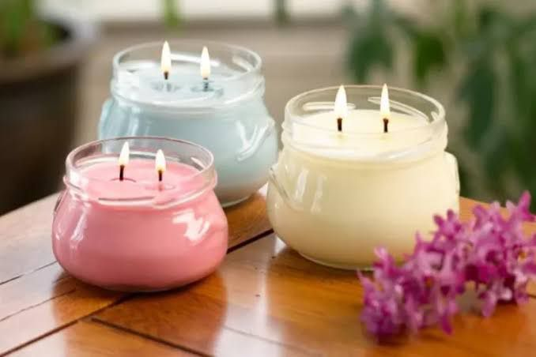

üïØÔ∏è Lilin Aromaterapi dari Minyak Jelantah

üßÇ Bahan yang Digunakan:
- 1. Minyak jelantah
- 2. Palm wax
- 3. Essential oil (aroma terapi)
- 4. Sumbu lilin
- 5. Pewarna makanan
üîß Alat yang Digunakan:
- 1. Panci
- 2. Pengaduk
- 3. Cetakan lilin
- 4. Kompor
- 5. Penyangga sumbu lilin
üî¨ Proses Pembuatan Lilin Aromaterapi:
- 1. Saring minyak jelantah agar bersih dari residu.
- 2. Tuang minyak ke dalam panci, panaskan dengan api sedang.
- 3. Tambahkan palm wax secara perlahan, aduk hingga larut (perbandingan 1:1).
- 4. Setelah larut, matikan kompor lalu tambahkan pewarna makanan dan essential oil.
- 5. Pasang sumbu lilin di tengah cetakan.
- 6. Tuang campuran ke dalam cetakan dan diamkan hingga mengeras.